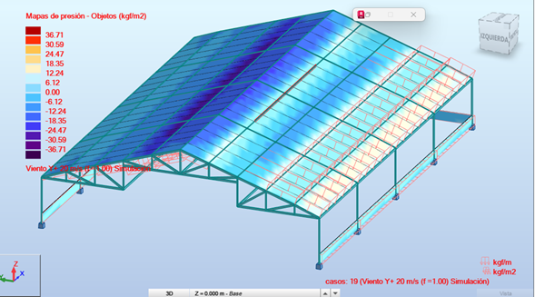
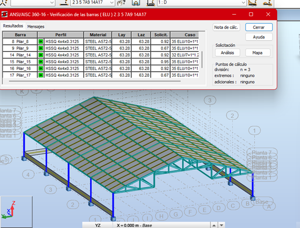

Naves Industriales Alaska | Aratoca, Santander

Resumen ejecutivo
Este proyecto corresponde al desarrollo estructural de naves industriales para Alaska, ubicadas en Aratoca, Santander, concebidas para responder a requerimientos de operación, amplitud espacial y eficiencia constructiva. Cada nave cuenta con una planta aproximada de 15 m de ancho por 100 m de longitud, lo que exigió una solución estructural capaz de garantizar luces funcionales, estabilidad global y buen desempeño frente a acciones gravitacionales y laterales. El enfoque del diseño priorizó la modulación, la viabilidad de construcción y la compatibilidad con el uso industrial de la edificación. El resultado fue una propuesta estructural clara, repetitiva y técnicamente robusta, orientada a facilitar la ejecución y el desempeño en servicio.
Contexto y restricciones
- Uso: Infraestructura industrial para operación y almacenamiento.
- Geometría principal: Naves de gran longitud con planta aproximada de 15 m × 100 m.
- Restricción clave: Mantener espacios funcionales, modulación repetitiva y eficiencia estructural.
- Condición del sitio: Proyecto localizado en Aratoca, Santander, con criterios de diseño acordes al contexto sísmico colombiano.
- Criterios de diseño: Resistencia, estabilidad lateral, servicio, economía y constructibilidad.
Solución estructural
La solución se planteó mediante un sistema estructural metálico de comportamiento eficiente para edificaciones industriales de una sola planta y gran desarrollo longitudinal. El esquema consideró pórticos principales repetitivos, elementos secundarios para soporte de cubierta y cerramientos, y una configuración orientada a optimizar el flujo de cargas hacia la cimentación. La modulación estructural permitió racionalizar cantidades, simplificar la fabricación de elementos y mejorar el proceso constructivo. El diseño se desarrolló buscando un equilibrio entre rigidez, liviandad y facilidad de montaje, manteniendo compatibilidad con las exigencias funcionales del proyecto.
Desempeño estructural
El comportamiento estructural fue evaluado considerando acciones gravitacionales y laterales, verificando la respuesta global de la nave, la estabilidad del sistema resistente y el control de deformaciones en condiciones de servicio. Dada la longitud del proyecto, fue especialmente importante revisar la continuidad estructural, la transferencia de cargas entre marcos y elementos secundarios, así como la conveniencia de una modulación que redujera complejidades de fabricación y montaje. El diseño se orientó a lograr una solución segura, repetible y adecuada para el uso industrial previsto.
Galería



